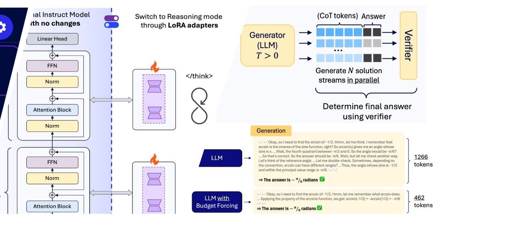
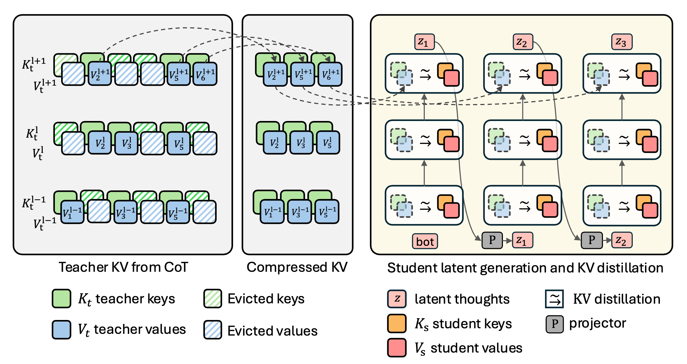
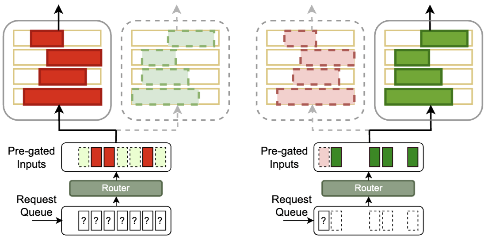
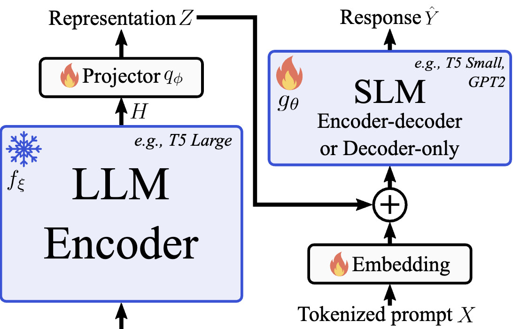
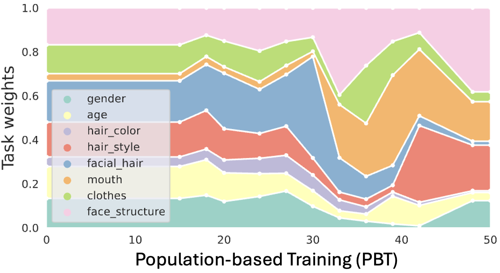
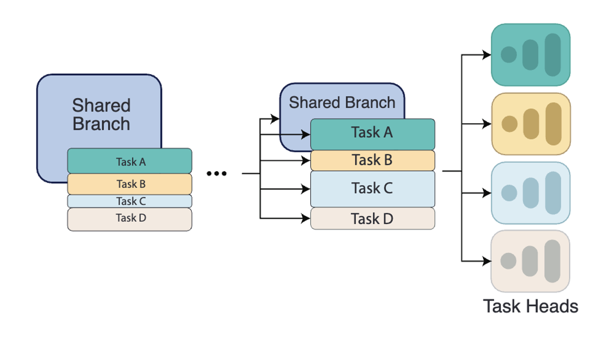

Babak Ehteshami Bejnordi
I am a research scientist at Qualcomm AI Research (Senior Staff and Manager). My primary research focus lies in the realm of efficient Deep Learning for Large Language Models (LLMs) and Computer Vision. My recent research works have been in the areas of Efficient LLM deployment, Efficient (Latent) Reasoning, Mixture of Experts, Multi-Task Learning, and Continual Learning. I am a manager and team lead with main focus on Efficient LLM Architectures at Qualcomm AI Research, Amsterdam. Previously, I was the organizer of the Qualcomm Innovation Fellowship Program in Europe between 2019 and 2023.
I obtained my PhD at the Diagnostic Image Analysis Group, Radboud University, the Netherlands, where I worked on the development of ML algorithms for breast cancer diagnostics. During my PhD, I also organized the CAMELYON16 challenge.
From Jun to Nov 2016, I was a visiting researcher at Harvard University, where I worked on applying deep learning to computational pathology, with a focus on tumor-associated stroma as a prognostic biomarker in breast cancer, in collaboration with researchers from Harvard, NIH, and Mayo Clinic.
Qualcomm AI Research, Amsterdam, The Netherlands

Research updates:
- 26 Jan 2026: KaVa: Latent Reasoning via Compressed KV-Cache Distillation, accepted at ICLR'26
- 02 Dec 2025: We demoed Efficient LLM reasoning at the edge, live this week at NeurIPS'25
- 23 May 2025: Mixture of Cache-Conditional Experts for Efficient Mobile Device Inference got accepted to TMLR 2025
- 09 May 2025: I gave an invited talk on "Efficient Deployment of LLMs on Edge Devices" at GHOST Day, Poznan, Poland
- 10 Mar 2025: This week, I delivered invited talks on LLM Efficiency at Apple and Cisco
- 09 Dec 2024: We will be demoing our Cache-MoE running efficiently on a smartphone at NeurIPS'24
- 05 Dec 2024: We bring Mixture of Experts (MoE) to mobile devices with limited available DRAM
- 26 Sep 2024: Check out our NeurIPS'24 and BMVC'24 papers on Efficient MoE and Multi-task learning
- 21 Sep 2023: Check out our NeurIPS'23 paper: Scalarization for Multi-Task and Multi-Domain Learning at Scale
Latest Research
View all →
Reasoning on the Edge
Reasoning in small LLMs using LoRA adapters, combined with supervised fine-tuning and RL-based Budget forcing.
Paper →
Latent Reasoning
Distilling knowledge from a compressed KV-cache of a teacher into a latent-reasoning student.
Paper →
Refactor LLM into MoE
Refactorizing LLMs as router-decoupled mixture of experts with system co-design.
Paper →

Scalarization for MTL
Scalarization for Multi-Task and Multi-Domain Learning at scale.
Paper →
InterroGate for MTL
Learning to share, specialize, and prune representations for Multi-task Learning.
Paper →